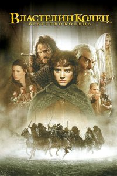

Բարի Գալուստ իմ առաջին էջ
+37498941429
+37491111294
Властелин колец: Братство кольца (2001)
Легенды Средиземья – это история Великой битвы за Кольцо всевластья, битвы, которая продолжалась несколько тысячелетий. Обладатель Кольца имел власть над всеми живущими, но вынужден был стать на службу силам зла.
Тихий поселок хоббитов. Маг Гэндальф, приглашенный на день рождения к Бильбо Бэггинсу, своему давнему приятелю, заводит речь о кольце, найденном Бильбо давным-давно. Оно когда-то было кольцом темного владыки Средиземья Саурона. Кольцо приносит владельцу огромное могущество. Саурон намерен возвратить себе власть над землями Средиземья. Бильбо передает свою старую находку племяннику Фродо, а тот пробует справиться с великой властью, которую приносит кольцо…
Год выпуска: 2001
Страна: США
Жанр: Фэнтези, Боевик, Приключения
Перевод: Дублированный
Продолжительность: 03:48:38
Премьера (РФ): 7 февраля 2002
Режиссер: Питер Джексон
В ролях: Элайджа Вуд, Иэн МакКеллен, Вигго Мортенсен, Шон Бин, Орландо Блум, Джон Рис-Дэвис, Иэн Холм, Шон Эстин, Билли Бойд, Доминик Монахэн